G. TEKENS AAN KUNSTWERKEN
Algemeen | ||||
Bij de hierna onder G.1 t/m G.4 genoemde markeringen kunnen de volgende tekens worden toegepast: | ||||
A.1: | hetzij rode vaste lichten | 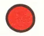 | hetzij rood-wit-rode rechthoekige borden | 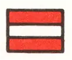 |
E.1: | hetzij groene vaste lichten | 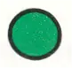 | hetzij groen-wit-groene rechthoekige borden | 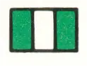 |
D.1: | hetzij gele vaste lichten | 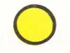 | hetzij gele ruitvormige borden | 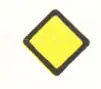 |
groene flikkerlichten | 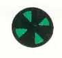 | |||
G.1 | Vaste bruggen en vaste delen van bruggen (*) | |||
a | Begrenzing vaargeulbreedte (Art. 6.24) | |||
verboden buiten de aangegeven begrenzing te varen (A.10) | 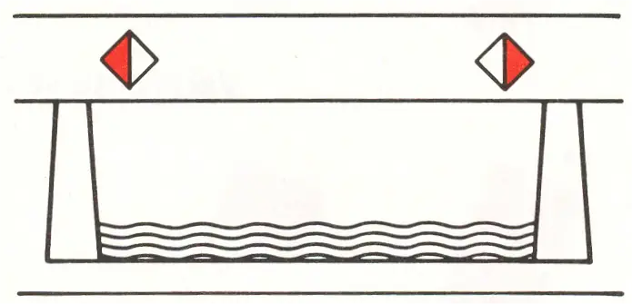 | |||
aanbeveling binnen de aangegeven begrenzing te varen (D.2) | 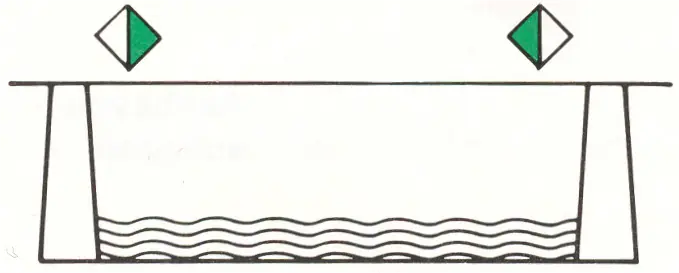 | |||
b | Verboden of aanbevolen doorvaartopening (Art. 6.25) | |||
verboden doorvaartopening | 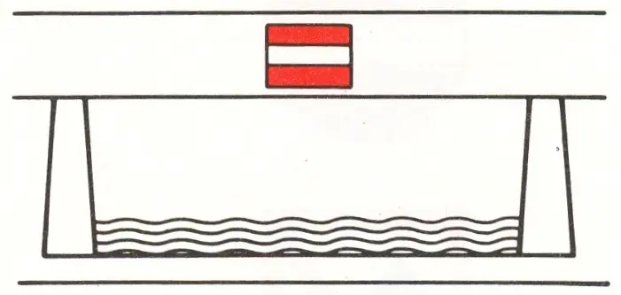 | |||
aanbevolen doorvaartopening, (**) tegenliggende vaart mogelijk | 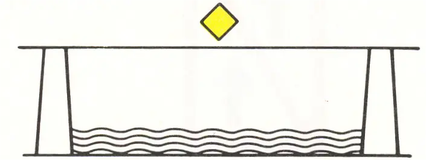 | |||
aanbevolen doorvaartopening, voor tegenliggende vaart verboden | 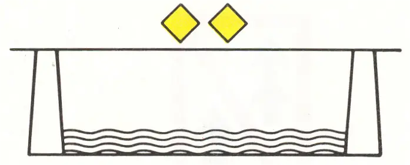 |
(*) Niet gemarkeerde brugopeningen kunnen op eigen risico worden gebruikt.
G.2 | Beweegbare bruggen (Art. 6.26) | ||
Opmerking: Het kan voorkomen dat de rode en groene lichten slechts aan één zijde van de doorvaartopening (als regel stuurboordszijde) zijn geplaatst. | |||
a | Bruggen in bedrijf | ||
doorvaart verboden | 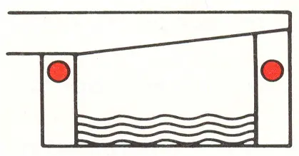 | ||
doorvaart gesloten brug toegestaan, tegenliggende vaart mogelijk | 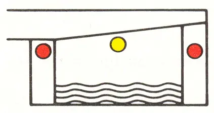 | ||
doorvaart gesloten brug toegestaan voor tegenliggende vaart verboden | 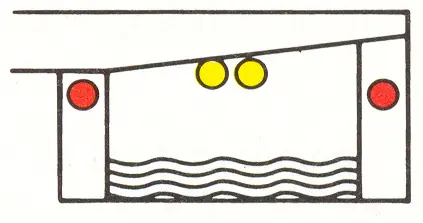 | ||
doorvaart verboden, wordt aanstonds toegestaan | 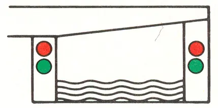 | ||
doorvaart toegestaan | 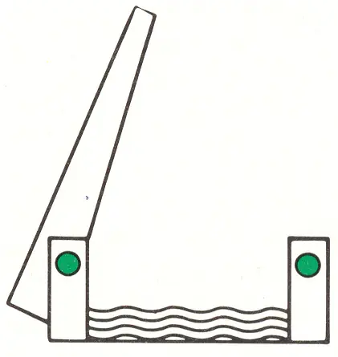 | ||
doorvaart verboden, tenzij de doorvaartopening zo dicht is genaderd, dat stilhouden redelijkerwijs niet meer mogelijk is | 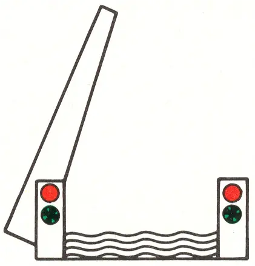 | ||
b | Bruggen buiten bedrijf | ||
doorvaart verboden | 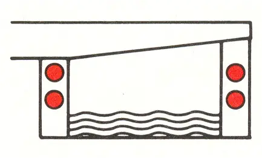 | ||
doorvaart gesloten brug toegestaan, tegenliggende vaart mogelijk | 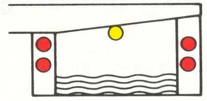 | ||
doorvaart gesloten brug toegestaan, voor tegenliggende vaart verboden | 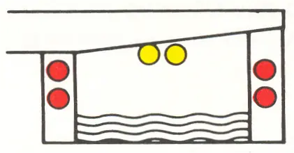 | ||
doorvaart toegestaan, tegenliggende vaart mogelijk | 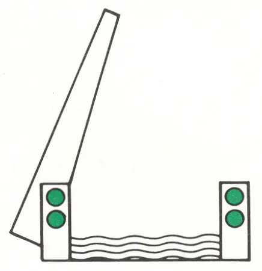 | ||
G.3 | Stuwen(art. 6.27) | ||
doorvaart verboden (stuw gesloten) | 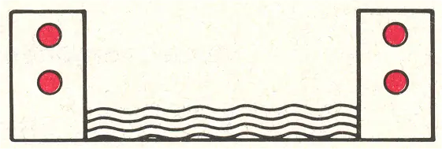 | ||
doorvaart verboden | 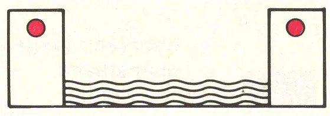 | ||
doorvaart toegestaan | 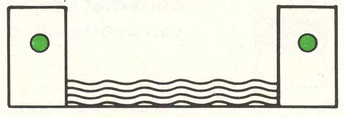 | ||
verboden doorvaartopening (brug over stuw) | 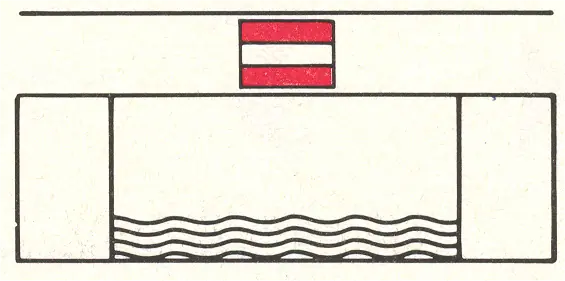 | ||
aanbevolen doorvaartopening (brug over stuw), tegenliggende vaart mogelijk | 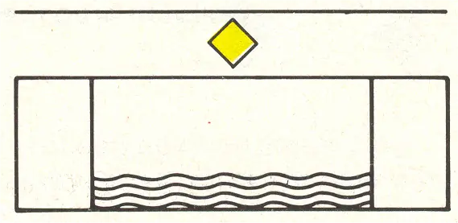 | ||
aanbevolen doorvaartopening (brug over stuw), voor tegenliggende vaart verboden | 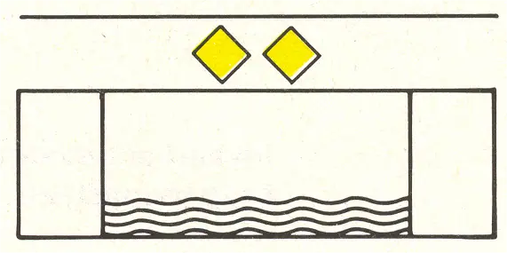 | ||
G.4 | Sluizen(art. 6.28a) | ||
Opmerking: Het kan voorkomen dat de rode en groene lichten slechts aan één zijde van de invaart (als regel stuurboordszijde) zijn geplaatst | |||
4.1 | Algemeen | ||
a | Sluis in bedrijf | ||
invaart of uitvaart verboden | 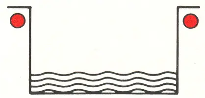 | ||
invaart verboden, wordt aanstonds toegestaan | 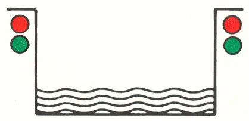 | ||
invaart of uitvaart toegestaan | 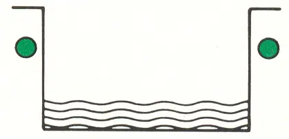 | ||
b | Sluis buiten bedrijf | ||
invaart verboden | 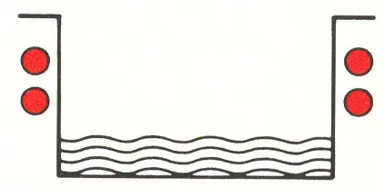 | ||
doorvaart toegestaan, sluis aan beide zijden openstaand | 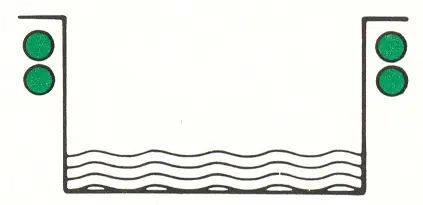 | ||
4.2 | Sluis met beweegbare brug (indien brug niet van aparte seingeving is voorzien) | ||
invaart sluis verboden, wordt aanstonds toegestaan | 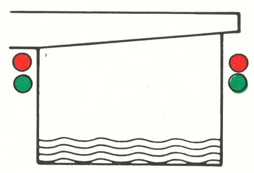 | ||
invaart of uitvaart sluis en doorvaart gesloten brug toegestaan | 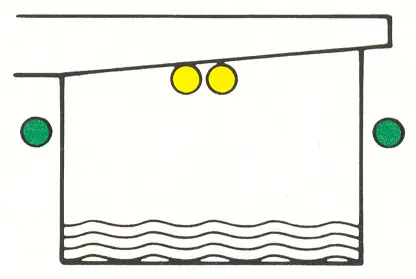 | ||
invaart of uitvaart sluis en doorvaart brug toegestaan | 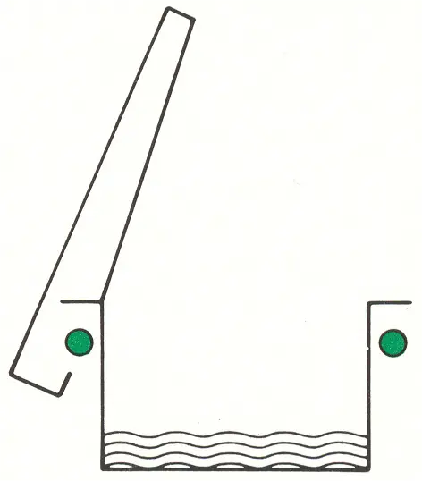 | ||
G.5 | Hoogteaanduidingen | ||
De beschikbare doorvaarthoogte van bruggen of andere overspanningen kan zijn aangegeven door middel van hoogteschalen of hoogteborden. | |||
5.1 | Hoogteschaal | ||
Deze is geplaatst aan de stuurboordzijde of aan beide zijden van de doorvaartopening van een kunstwerk. Een hoogteschaal is verdeeld in blokken van 1 meter; afhankelijk van de plaatselijke situatie kan eveneens een onderverdeling in halve meters en decimeters zijn toegepast. | 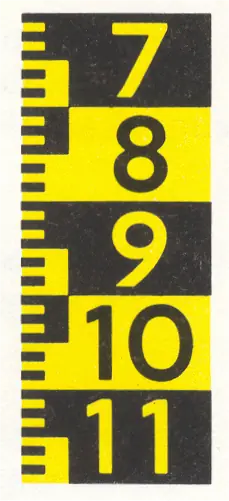 | ||
a | Voorhoogteschaal | ||
Deze is op dezelfde wijze uitgevoerd als de hoogteschaal, doch als voorwaarschuwing op enige afstand voor een kunstwerk geplaatst. De naam of aanduiding van dat kunstwerk is meestal boven de voorhoogteschaal vermeld. | |||
b | Referentietekens | ||
Deze tekens geven de plaats van de overspanning aan waarop de aanwijzing van de hoogteschaal betrekking heeft; | 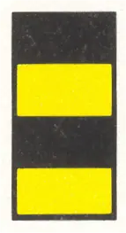 | ||
of | |||
wanneer reeds een beperking van de vaargeulbreedte is aangegeven d.m.v. het teken A.10 | 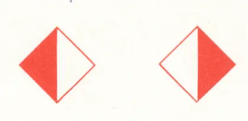 | ||
of | |||
het teken D.2 dan dienen deze als referentietekens. | |||
Indien geen referentietekens zijn aangebracht dan heeft de aanwijzing van de hoogteschaal betrekking op het laagste punt van de overspanning binnen het normaal bruikbare breedteprofiel. | |||
c | Aanduiding overhoogte/onderhoogte | ||
Indien op een bepaald punt van een overspanning meer of minder hoogte beschikbaar is dan de hoogteschaal aanwijst, dan kan dit zijn aangegeven met een teken waarin de betreffende over- of ondermaat in meters is vermeld. | 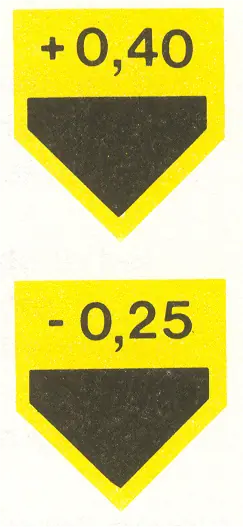 | ||
5.2 | Hoogtebord | ||
Bij sommige vaarwegen wordt de beschikbare doorvaarthoogte aangegeven op een hoogtebord, dat is aangebracht aan de overspanning. | 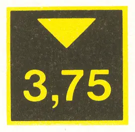 | ||
5.3 | Dieptebord | ||
Bij sommige vaarwegen wordt de beschikbare waterdiepte aangegeven op een dieptebord | 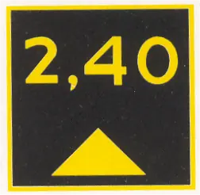 |